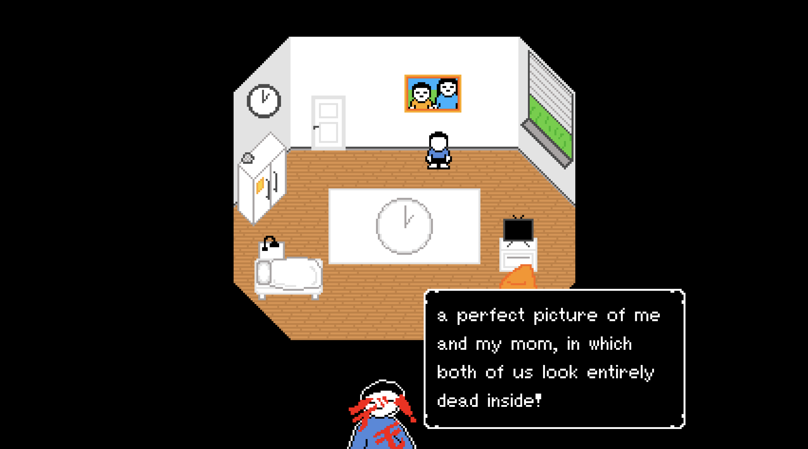
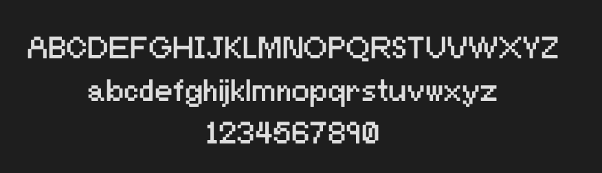

Dialogue plays an important role in an RPG so having a reliable system is extremly important. Last time I built a dialogue system for the previous game it didn't go to plan, I ended up fighting it every time I wanted to add some dialogue to the game. This time however I built a really flexible and optimised dialogue system that is easy to rework and won't need as much maintanence as the old one did.
note: player speaker image is not final
Relating to dialogue...
For the dialogue I wanted a hand made, pixel perfect font so I threw together Bitstad. Feel free to use it in any of your own projects, no copyright.
Saving is yet another feature I felt was, minorly important to a RPG game, so I decided it was worth the trouble of throwing together.
Nerd info: TBST will save your game in JSON converted to binary to lower the risk of a file corrupting
Here's some gameplay footage, including the revamped first room!